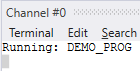

Process Parameter (Read Only)
Returns the name of the process being executed as a string value.
This command can be used in conjunction with PROC and PROCNUMBER . See examples below.
Using a Basic Library function, print the running program name.
Basic Library file (LIB.BAL):
FUNCTION printprogname(process_number AS INTEGER) AS
STRING
DIM progname AS STRING(20)
progname = PROGRAM_NAME PROC(process_number)
RETURN progname
ENDFUNC
Demo program (DEMO_PROG.BAS):
PRINT "Running: " + printprogname(PROCNUMBER)
Result on Terminal 0:

In Terminal 0, print the name of the program running on process number 18.
>>?PROGRAM_NAME PROC(18)
DEMO_PROG
PROC , PROC_LINE , PROCNUMBER